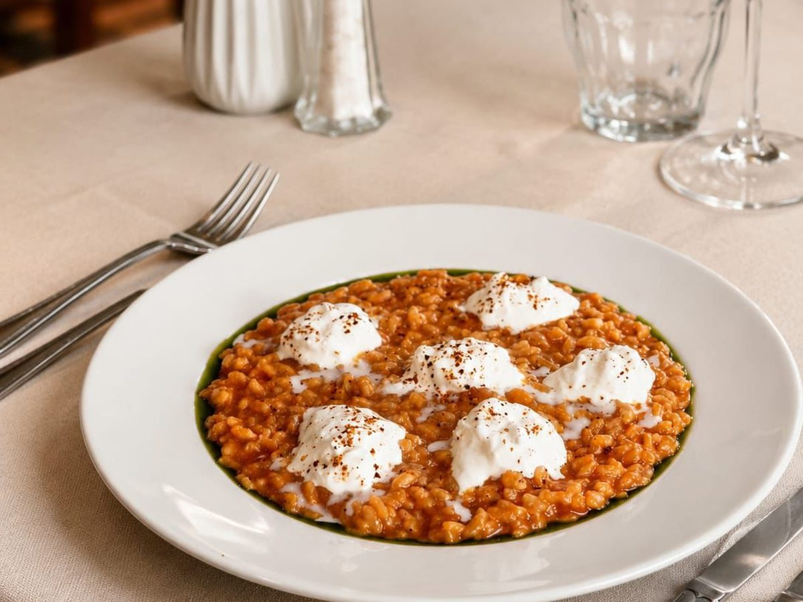
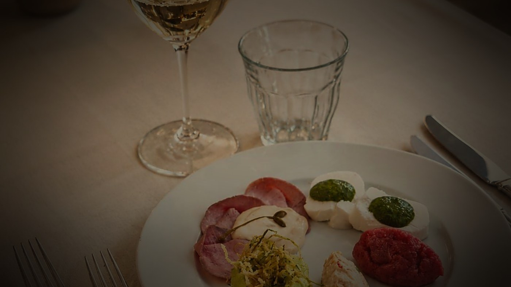
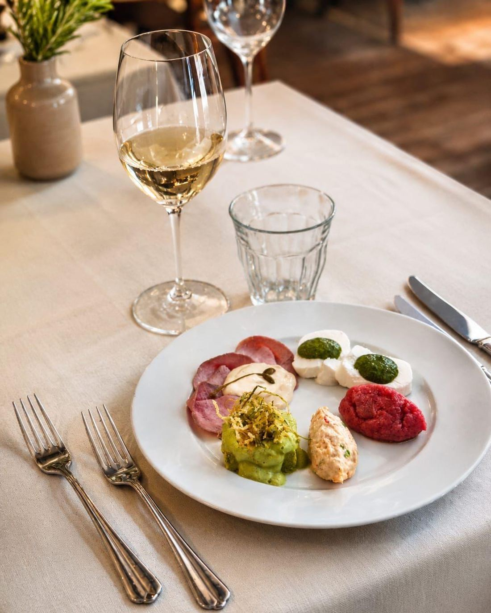
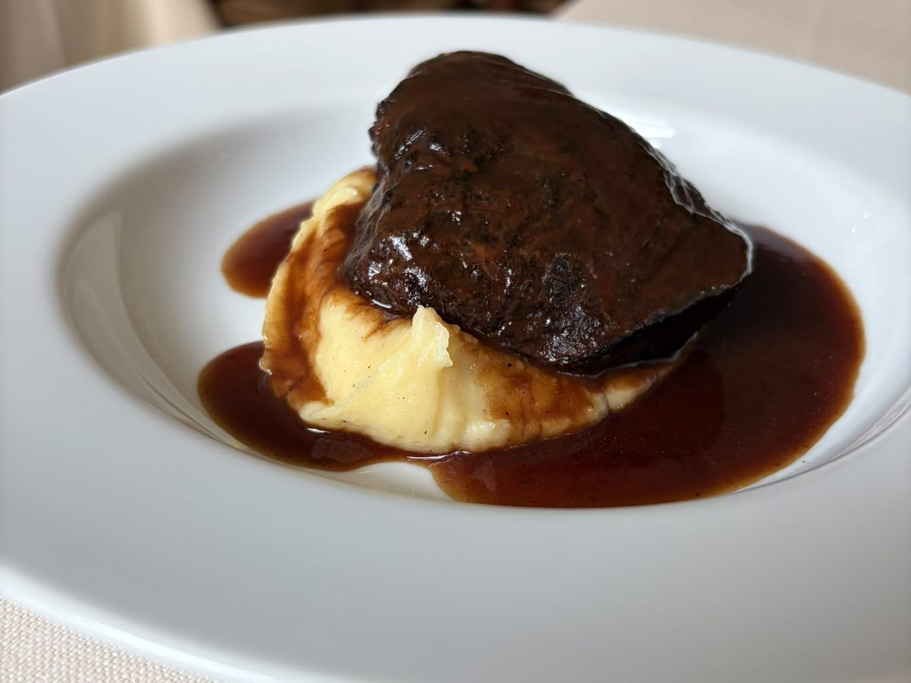
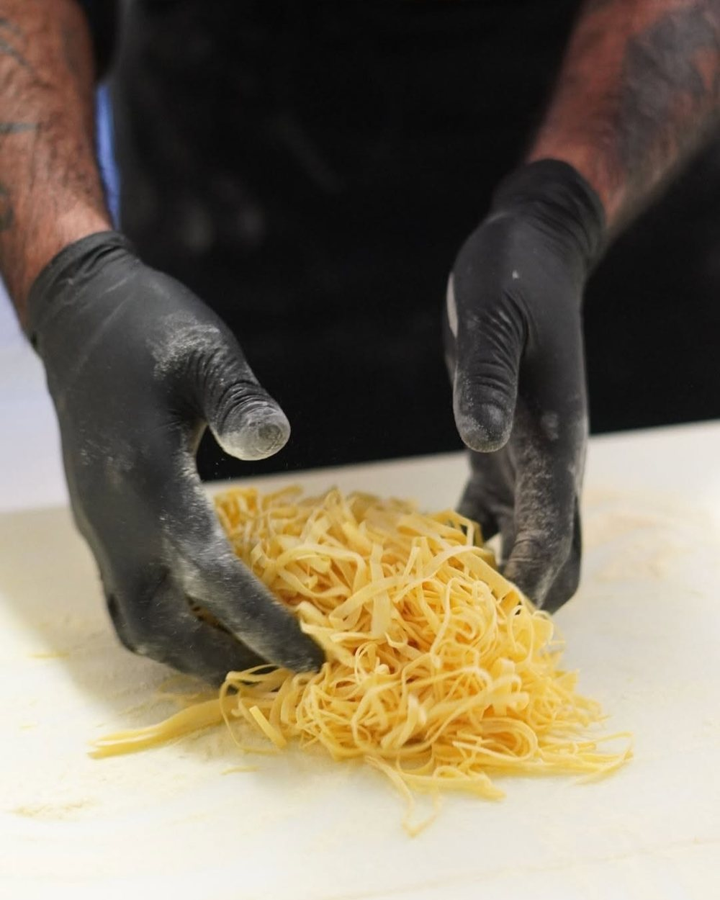
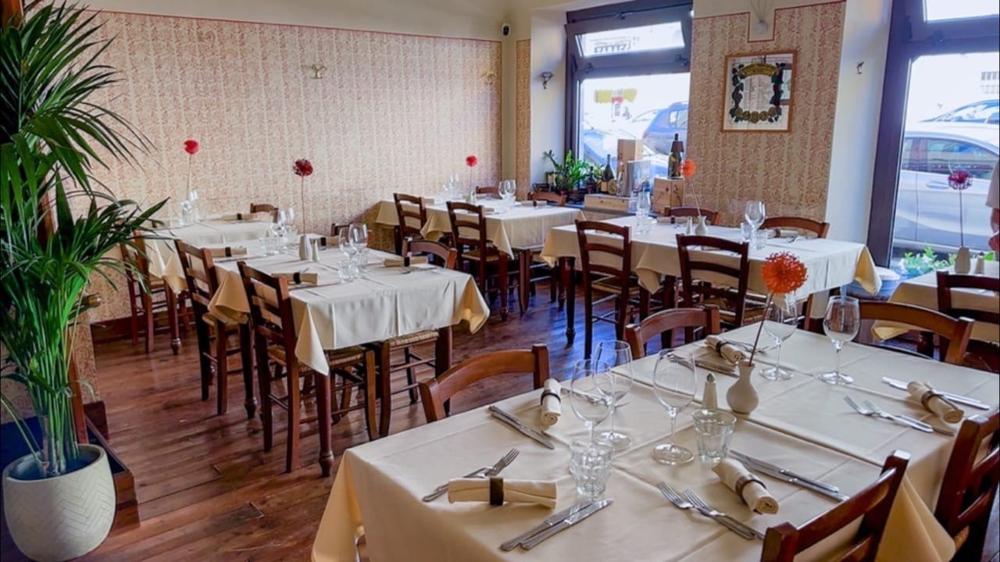

Risotto al pomodoro arrosto
Risotto al pomodoro arrosto
Con stracciatella di burrata Moris e scorza di limone. Semplice, esatto, di stagione.

La cucina classica, nella sua essenza: verità in ogni piatto, ospitalità che non si forza. Il posto dove si torna, in ogni momento della vita.
Cirio nasce da un'idea precisa: dare valore alla cucina nella sua forma più autentica. Una cucina classica, costruita sulla tecnica, sulla conoscenza e sul rispetto della materia prima.
Non cerchiamo di stupirti con piatti complicati o impiattamenti da laboratorio. Facciamo il contrario: togliamo il superfluo e lasciamo parlare il sapore. Perché la vera difficoltà, in cucina, non è aggiungere. È saper togliere.
Il ragù che riposa a fuoco basso per ore. I tajarin tirati a mano ogni mattina. Gesti semplici solo all'apparenza, che chiedono tempo e mestiere. È questa la nostra idea di essenza: non economia, ma cura.
Costruita su tecnica, conoscenza e rispetto della materia prima. Ogni piatto nasce da gesti reali, quotidiani, riconoscibili. Nulla è costruito per stupire, tutto è pensato per essere vero.
Cirio è costruito intorno all'ospite. L'accoglienza è naturale, il servizio è attento, la relazione è spontanea. Ogni gesto nasce da un'attenzione reale, mai forzata.
Cirio è un luogo che si sceglie e si ritrova. I piatti, i sapori, i gesti e i rituali costruiscono una memoria nel tempo. Un'esperienza che invita a tornare.
Materie prime scelte, tecnica e tempo: ogni piatto nasce dal rispetto della tradizione piemontese e dalla cura in ogni passaggio.
È il piatto che apre quasi ogni tavolo, e quello che ci chiedono più di tutti. L'antipasto misto è la nostra dichiarazione d'intenti: la tradizione piemontese rispettata e portata avanti, un assaggio alla volta.
Vitello tonnato, carne cruda battuta al coltello, insalata russa, tomino con bagnetto verde, flan di zucchine. Ogni elemento curato nei minimi dettagli, per raccontare tutta la tradizione in un solo piatto.


Con stracciatella di burrata Moris e scorza di limone. Semplice, esatto, di stagione.

Per mangiarla basta un cucchiaio.

Ogni sfoglia nasce sul tagliere, tirata a mano ogni mattina come si faceva un tempo. Niente scorciatoie, niente macchine che fanno il lavoro al posto nostro: solo farina, uova e la pazienza di chi conosce il mestiere.
Tajarin tirati a mano e tagliati al coltello come li facevano le nostre nonne, agnolotti chiusi a mano e gnocchi che si sciolgono in bocca. Tutto curato nei minimi dettagli, e si sente al primo assaggio.
Puoi mangiare bene in tanti posti. Ma quante volte, quando esci, ti senti come a casa? Da Cirio non si viene una volta sola. Si torna.
«I piatti della tradizione, dimenticati dagli altri ristoranti. E la cordialità di altri tempi.»Recensione su TripAdvisor
«Sembra di essere a casa. Cucina autentica e servizio che ti fa sentire atteso.»Recensione su TripAdvisor
«Porzioni generose e piatti veri. Il posto giusto per la vera cucina piemontese a Torino.»Recensione su Google
Restano 3 tavoli per sabato sera
✓ Nessun pagamento anticipato · confermiamo noi per telefono
Problemi con il modulo? Chiamaci al 011 276 4475.
